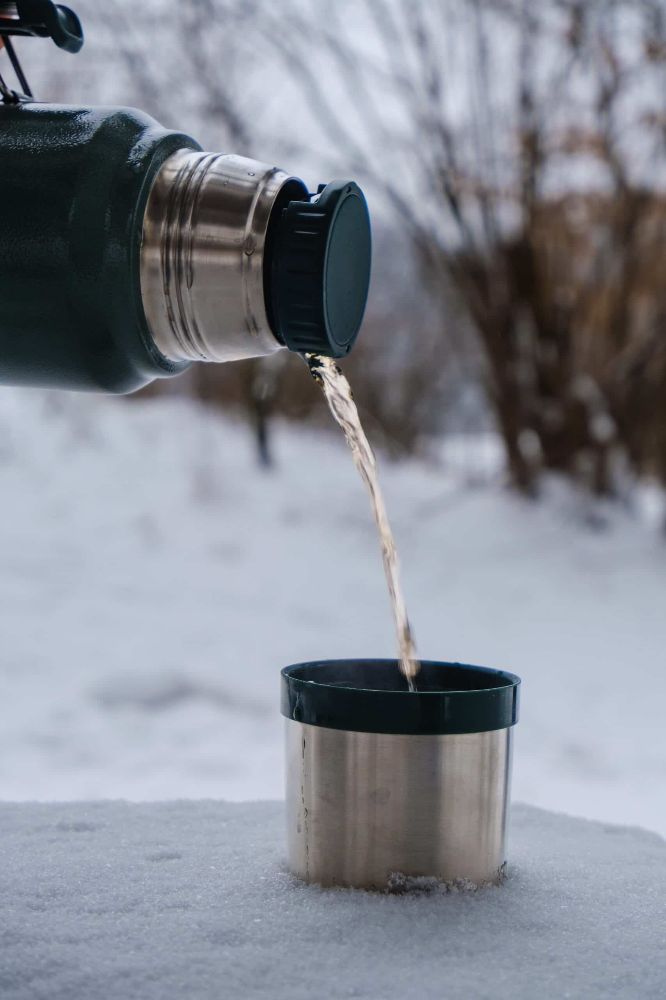
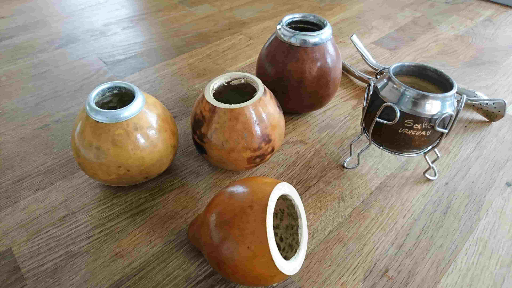
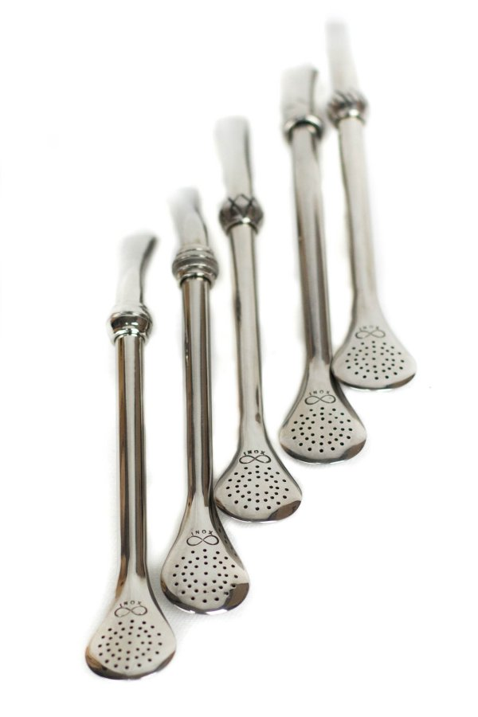

Anytime Energy
Natural caffeine with smooth, steady focus.

Explore flavors, learn the ritual, and brew like a local.

Natural caffeine with smooth, steady focus.

Share the round—mate is best with friends and family.

Just yerba, a gourd, a bombilla, and hot (not boiling) water.
We’ll remember your favorite difficulty (soft/medium/bitter) and last brew ratio.